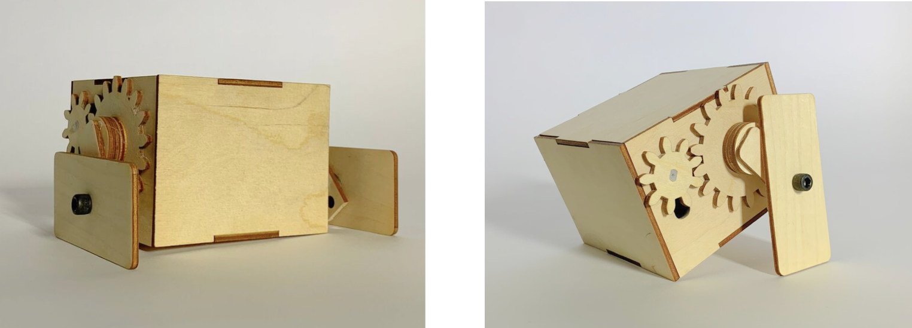

context
For our final project for DES INV 22, Prototyping and Fabrication, we were tasked to design non-wheeled vehicle that could be controlled via Bluetooth and navigated around an obstacle course.
We were given three weeks for the project, iterating through low, medium, and high fidelity.
ideation
We began by brainstorming different motive mechanisms. We came up with several different ideas, and decided to narrow them down to concepts that were more nuanced than cutting holes in the wheels of a normal car. We ultimately settled on a stomping movement, and thought it would be effective, clean, and cute to design around a small cube.
low fidelity
For our low-fidelity vehicle, we focused on constructing a working motive mechanism, leaving smaller issues like traction, efficiency, and weight distribution to be ironed out later. We designed the sides of the robot with vertical slots for the DC motors so we could test different alignments of the gears. We also cut multiple holes in the “arms” of the robot to test different arm lengths. Ultimately, we arrived at a working mechanism with the same fundamental design as our showcase vehicle.
Initial sketches of each piece
Sketching and constructing
Final low-fidelity prototype
mid fidelity
Our medium-fidelity prototype was strikingly similar to our first deliverable but was fully motorized, allowing us to see the true motion of our vehicle. After testing the motion of our vehicle we made many tiny optimizations under the hood. We re-mounted the DC motors flat against the inside of the box to eliminate any rubbing between the drive gear and the box. We added thread locker and washers to all the through-bolts so that they wouldn’t tighten or loosen with the rotation of the gears. We added some small rubber bands to the outside of the feet to add some traction and secured the battery pack and Feather to the sides of the box.
Iteration Sketches
Constructing
Final mid-fidelity prototype
high fidelity
We further optimized efficiency and weight distribution and upgraded our feet. We added another set of washers between the gears and sides of the box: this perfectly aligned both sets of gears and completely eliminated rubbing. We squeezed the battery pack flat against the bottom of the box to lower the vehicle’s center of mass. The most visible improvement to this vehicle is the feet: we cut new feet, making the bottoms extra wide to help the feet properly orient between “stomps” and also to increase the surface area contacting the ground.